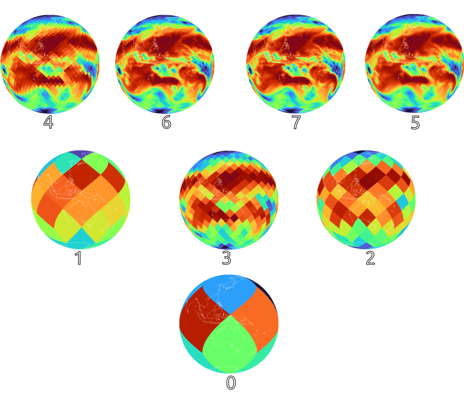

Why HEALPix?
Climate and Earth observation datasets usually do not share a common grid. Some are regular latitude/longitude grids, some are curvilinear, some are unstructured meshes, and others come from satellite swaths or model-specific native grids. That makes cross-dataset analysis harder than it should be.
Waterpark uses HEALPix as the common target grid.
HEALPix stands for Hierarchical Equal Area isoLatitude Pixelisation. For Waterpark, three properties are especially important:
- every pixel has the same area,
- the grid has a natural hierarchy,
- there is no pole singularity.
Equal-area pixels¶
On a latitude/longitude grid, grid cells become smaller toward the poles. That means a simple arithmetic mean over all grid cells is not a proper global mean; the data must be weighted by cell area, often approximated with a cosine-latitude weight.
HEALPix avoids this problem because all pixels at the same level have the same area. For global analysis this is a major simplification: each pixel represents the same part of the sphere.
This is useful for:
- global means,
- area-integrated quantities,
- machine-learning samples,
- spatial statistics,
- cross-dataset comparisons.
Equal-area sampling also avoids forcing downstream tools to learn or compensate for the pole distortion of latitude/longitude grids.
A natural multi-resolution hierarchy¶

Visualisation of a HEALPix resolution pyramid from level 0 (bottom) to level 7.
HEALPix is hierarchical. Each parent pixel is split into four child pixels at the next finer level. In nested ordering, this makes coarsening straightforward:
For Waterpark this is important because datasets are stored as multi-resolution pyramids. A pyramid contains the same dataset at several HEALPix levels:
The finest level is produced by remapping from the source grid. Coarser levels are derived from the finer levels by hierarchical coarsening, not by repeated remapping. This keeps the pyramid consistent and avoids fabricating new detail at lower resolutions.
No pole singularity¶
Latitude/longitude grids have a structural problem at the poles: meridians converge. This creates very small cells near the poles and awkward numerical behaviour for some operations.
HEALPix has no pole singularity. It still covers the whole sphere, but the pixel layout avoids the special treatment that latitude/longitude grids often need near the poles.
Choosing the target level¶
Waterpark chooses the finest HEALPix level from the source resolution. The goal is to avoid oversampling: the target grid should not pretend to contain more spatial detail than the original dataset.
In practice, the selected HEALPix level is the next level whose characteristic pixel spacing is coarser than the source resolution.
For a source resolution Δ, the target level can be approximated as:
This means:
- high-resolution source data receives a high HEALPix level,
- coarse model output receives a lower HEALPix level,
- lower pyramid levels are derived by coarsening.
How variables are remapped¶
Different variables need different remapping methods.
| Variable type | Method | Why |
|---|---|---|
| Continuous fields, such as temperature, SST, wind, radiation, or precipitation | Conservative remapping | Preserves area-weighted quantities and handles sub-pixel variability. |
| Discrete or categorical fields, such as land-sea masks, land cover, or soil type | Nearest neighbour | Keeps valid class labels and avoids artificial intermediate classes. |
Bilinear interpolation is deliberately not Waterpark's default choice. It can create values that were not present in the original field and does not preserve integrals. For Waterpark, conservative remapping is the safer default for continuous geophysical fields.
What HEALPix does not solve by itself¶
HEALPix gives Waterpark a common geometry, but it does not solve the full data access problem alone. A useful data hub also needs:
- chunked storage,
- metadata,
- lazy access,
- remote reads,
- catalogue integration,
- stable naming conventions.
That is why Waterpark combines HEALPix with Zarr and S3-compatible access.